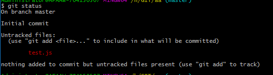

将文件添加到版本库需要如下步骤：
1、查看目录状态：
输入git status命令，如果目录中有添加的文件未提交到版本库会有如下图示：

上面显示一个红色的文件名，这个文件名就是添加到目录中的文件，表示还没有添加到版本库；
2，将文件添加到版本库暂存区
输入git add +文件名 命令，然后再输入git status查案状态：
 此时会出现一个绿色的文件名，表示刚才添加的文件；
如果是一个目录很多文件需要添加则可以输入： git add . 命令，表示添加当前目录中的所有文件到暂存区，注意add后面有一个点：
此时会出现一个绿色的文件名，表示刚才添加的文件；
如果是一个目录很多文件需要添加则可以输入： git add . 命令，表示添加当前目录中的所有文件到暂存区，注意add后面有一个点：
 提交后也可以输入git status查看状态
3、将文件提交到版本库：
输入 ：git commit -m “修改日志” ，此时就会把文件提交到版本库
git commit -m “”这个引号里面输入的是自定的的内容，表示的是修改日志，就是描述修改了什么东西；
提交成功后会有如下提示：
[master 832f150] 文件名
1 file changed, 0 insertions(+), 0 deletions(-)
create mode 100644 文件名"
将文件添加到版本库经历如下步骤：
提交后也可以输入git status查看状态
3、将文件提交到版本库：
输入 ：git commit -m “修改日志” ，此时就会把文件提交到版本库
git commit -m “”这个引号里面输入的是自定的的内容，表示的是修改日志，就是描述修改了什么东西；
提交成功后会有如下提示：
[master 832f150] 文件名
1 file changed, 0 insertions(+), 0 deletions(-)
create mode 100644 文件名"
将文件添加到版本库经历如下步骤：